using JLD2 # for loading saved data
using DataFrames # for storing data as type DataFrame
using CairoMakie # for plots
using Statistics # for var() function
using MultivariateStats # for getting variances from PCA model
using CSV # for reading in delimited files
# using Impute # for imputing missing genotypesGreenish Warbler PCA plots
This page shows the code used to generate PCA plots for the whole genome (and also for each chromosome, although those aren’t shown in the paper).
Prior to examining the code on this page, readers should look at GreenishWarblerGenomics2025.qmd (or .html) and GW_Zchromosome_analysis.qmd (or .html), as this current page depends on the code on those pages being run first.
Citation
The scripts, data, and figures shown in this website were used as the basis for the paper listed below, which should be cited as the source of information from this website:
Irwin, D., S. Bensch, C. Charlebois, G. David, A. Geraldes, S.K. Gupta, B. Harr, P. Holt, J.H. Irwin, V.V. Ivanitskii, I.M. Marova, Y. Niu, S. Seneviratne, A. Singh, Y. Wu, S. Zhang, T.D. Price. 2025. The distribution and dispersal of large haploblocks in a superspecies. Molecular Ecology, in press.
A note about plots in this document
The plots shown below may different somewhat in appearance between the version produced by Quarto (i.e., in this published document) and the version you would get if you run this code without using Quarto. In particular, the dimensions and font sizes of labels and titles may differ. So if you want the versions identical to those used in the paper, run the code directly in the Julia REPL (or using an environment such as VS Code) without using Quarto.
In the rendered (.html) version of this Quarto notebook, each figure may be accompanied by a warning caused by an interaction between Quarto and the Makie plotting package. Ignore these warnings as they do not affect the calculations or plots.
Load packages
Load my custom package GenomicDiversity:
using GenomicDiversityChoose working directory
dataDirectory = "/Users/darrenirwin/Dropbox/Darren's current work/"
cd(dataDirectory)Load the filtered dataset
This dataset was produced through filtering in GreenishWarblerGenomics2025.qmd:
baseName = "GW_genomics_2022_with_new_genome/GW2022_GBS_012NA_files/GW2022_all4plates.genotypes.SNPs_only.whole_genome"
tagName = ".Jan2025."
filename = string(baseName, tagName, "ind_SNP_ind_filtered.jld2")
# load info into a dictionary (and check for errors):
d = load(filename)
if baseName != d["baseName"]
println("WARNING: baseNames don't match between that defined above and in the saved file")
end
if tagName != d["tagName"]
println("WARNING: tagNames don't match don't match between that defined above and in the saved file")
end
GW_GenoData_indFiltered = d["GW_GenoData_indFiltered"]
repoDirectory = d["repoDirectory"]
dataDirectory = d["dataDirectory"]
scaffold_info = d["scaffold_info"]
scaffold_lengths = d["scaffold_lengths"]
filenameTextMiddle = d["filenameTextMiddle"]
missingGenotypeThreshold = d["missingGenotypeThreshold"]
filenameTextEnd = d["filenameTextEnd"]
chromosomes_to_process =d["chromosomes_to_process"]
println("Loaded the filtered data.")Loaded the filtered data.Make final whole-genome PCA
Now that the Z-chromosome problem has been solved (by removing SNPs that had a divergent W sequence mapped onto that Z location), we can construct a new whole-genome PCA. I will combine the saved imputed genotypes for each chromosome into a large data matrix, and conduct PCA on that.
We need to first specify some groups to include in the plot, and their colors:
groups_to_plot_PCA = ["vir","vir_S","nit", "lud_PK", "lud_KS", "lud_central", "lud_Sath", "lud_ML","troch_west","troch_LN","troch_EM","obs","plumb_BJ","plumb","plumb_vir"]
group_colors_PCA = ["blue","turquoise1","grey","seagreen4","seagreen3","seagreen2","olivedrab3","olivedrab2","olivedrab1","yellow","gold","orange","pink","red","purple"];Make list of scaffolds to include in the whole-genome PCA:
scaffolds_to_include = "gw" .* string.(vcat(28:-1:17, 15:-1:1))
push!(scaffolds_to_include, "gw1A", "gw4A", "gwZ_cleaned") # add three other scaffolds30-element Vector{String}:
"gw28"
"gw27"
"gw26"
"gw25"
"gw24"
"gw23"
"gw22"
"gw21"
"gw20"
"gw19"
"gw18"
"gw17"
"gw15"
⋮
"gw9"
"gw8"
"gw7"
"gw6"
"gw5"
"gw4"
"gw3"
"gw2"
"gw1"
"gw1A"
"gw4A"
"gwZ_cleaned"# initialize data structures for genotypes and positions
imputeMethod = "KNN" # choices are KNN or SVD
genos_imputed_loaded = Matrix{Union{Missing, Float32}}(undef, nrow(GW_GenoData_indFiltered.indInfo), 0)
pos_SNP_loaded = DataFrame(chrom = String[], position = Int64[])
for i in eachindex(scaffolds_to_include)
chrom = scaffolds_to_include[i]
regionText = string("chr", chrom)
filename = string(baseName, tagName, regionText, ".", imputeMethod, "imputedMissing.jld2")
imputed_genos_one_chr = load(filename, "imputed_genos")
genos_imputed_loaded = hcat(genos_imputed_loaded, imputed_genos_one_chr)
if GW_GenoData_indFiltered.indInfo.ind != load(filename, "ind_with_metadata_indFiltered")[:, :ind]
println("""Warning: "ind" columns in loaded data and memory data don't match.""")
end
pos_SNP_filtered_region = load(filename, "pos_SNP_filtered_region")
pos_SNP_loaded = vcat(pos_SNP_loaded, pos_SNP_filtered_region)
println(string("Loaded ",filename))
println(string(regionText, ": ", size(imputed_genos_one_chr,2), " SNPs from ", size(imputed_genos_one_chr,1), " individuals"))
end
flipPC1 = true
flipPC2 = true
PCA_wholeGenome = plotPCA(genos_imputed_loaded,
GW_GenoData_indFiltered.indInfo,
groups_to_plot_PCA, group_colors_PCA;
sampleSet = "greenish warblers", regionText = "wholeGenome",
flip1 = flipPC1, flip2 = flipPC2,
lineOpacity = 0.7, fillOpacity = 0.6,
symbolSize = 14, showTitle = false)
totalObservationVariance = var(PCA_wholeGenome.model)
PC1_variance, PC2_variance = principalvars(PCA_wholeGenome.model)[1:2]
PC1_prop_variance = PC1_variance / totalObservationVariance
PC2_prop_variance = PC2_variance / totalObservationVariance
println("PC1 explains ", 100*PC1_prop_variance, "% of the total variance.
PC2 explains ", 100*PC2_prop_variance, "%.")
GW_GenoData_indFiltered.indInfo.PC1 = PCA_wholeGenome.PC1
GW_GenoData_indFiltered.indInfo.PC2 = PCA_wholeGenome.PC2
# add position of reference genome
refGenomePCAposition = predict(PCA_wholeGenome.model, zeros(size(genos_imputed_loaded, 2)))
flipPC1 && (refGenomePCAposition[1] *= -1) # this flips PC1 if flipPC1 = true
flipPC2 && (refGenomePCAposition[2] *= -1) # same for PC2
CairoMakie.scatter!(refGenomePCAposition[1], refGenomePCAposition[2], marker = :diamond, color="black", markersize=15, strokewidth=0.5)
try
display(PCA_wholeGenome.PCAfig)
catch
println("NOTICE: Figure for ", regionText, " could not be shown due to an unknown error.")
end
if false #set to true to save
save(string("Figure1B_PCAwholeGenome_", imputeMethod,"imputed_fromJulia.png"), PCA_wholeGenome.PCAfig, px_per_unit = 2.0)
endLoaded GW_genomics_2022_with_new_genome/GW2022_GBS_012NA_files/GW2022_all4plates.genotypes.SNPs_only.whole_genome.Jan2025.chrgw28.KNNimputedMissing.jld2
chrgw28: 11180 SNPs from 257 individuals
Loaded GW_genomics_2022_with_new_genome/GW2022_GBS_012NA_files/GW2022_all4plates.genotypes.SNPs_only.whole_genome.Jan2025.chrgw27.KNNimputedMissing.jld2
chrgw27: 9684 SNPs from 257 individuals
Loaded GW_genomics_2022_with_new_genome/GW2022_GBS_012NA_files/GW2022_all4plates.genotypes.SNPs_only.whole_genome.Jan2025.chrgw26.KNNimputedMissing.jld2
chrgw26: 14303 SNPs from 257 individuals
Loaded GW_genomics_2022_with_new_genome/GW2022_GBS_012NA_files/GW2022_all4plates.genotypes.SNPs_only.whole_genome.Jan2025.chrgw25.KNNimputedMissing.jld2
chrgw25: 3794 SNPs from 257 individuals
Loaded GW_genomics_2022_with_new_genome/GW2022_GBS_012NA_files/GW2022_all4plates.genotypes.SNPs_only.whole_genome.Jan2025.chrgw24.KNNimputedMissing.jld2
chrgw24: 13821 SNPs from 257 individuals
Loaded GW_genomics_2022_with_new_genome/GW2022_GBS_012NA_files/GW2022_all4plates.genotypes.SNPs_only.whole_genome.Jan2025.chrgw23.KNNimputedMissing.jld2
chrgw23: 13949 SNPs from 257 individuals
Loaded GW_genomics_2022_with_new_genome/GW2022_GBS_012NA_files/GW2022_all4plates.genotypes.SNPs_only.whole_genome.Jan2025.chrgw22.KNNimputedMissing.jld2
chrgw22: 5473 SNPs from 257 individuals
Loaded GW_genomics_2022_with_new_genome/GW2022_GBS_012NA_files/GW2022_all4plates.genotypes.SNPs_only.whole_genome.Jan2025.chrgw21.KNNimputedMissing.jld2
chrgw21: 13321 SNPs from 257 individuals
Loaded GW_genomics_2022_with_new_genome/GW2022_GBS_012NA_files/GW2022_all4plates.genotypes.SNPs_only.whole_genome.Jan2025.chrgw20.KNNimputedMissing.jld2
chrgw20: 32739 SNPs from 257 individuals
Loaded GW_genomics_2022_with_new_genome/GW2022_GBS_012NA_files/GW2022_all4plates.genotypes.SNPs_only.whole_genome.Jan2025.chrgw19.KNNimputedMissing.jld2
chrgw19: 25414 SNPs from 257 individuals
Loaded GW_genomics_2022_with_new_genome/GW2022_GBS_012NA_files/GW2022_all4plates.genotypes.SNPs_only.whole_genome.Jan2025.chrgw18.KNNimputedMissing.jld2
chrgw18: 19359 SNPs from 257 individuals
Loaded GW_genomics_2022_with_new_genome/GW2022_GBS_012NA_files/GW2022_all4plates.genotypes.SNPs_only.whole_genome.Jan2025.chrgw17.KNNimputedMissing.jld2
chrgw17: 26313 SNPs from 257 individuals
Loaded GW_genomics_2022_with_new_genome/GW2022_GBS_012NA_files/GW2022_all4plates.genotypes.SNPs_only.whole_genome.Jan2025.chrgw15.KNNimputedMissing.jld2
chrgw15: 27517 SNPs from 257 individuals
Loaded GW_genomics_2022_with_new_genome/GW2022_GBS_012NA_files/GW2022_all4plates.genotypes.SNPs_only.whole_genome.Jan2025.chrgw14.KNNimputedMissing.jld2
chrgw14: 30969 SNPs from 257 individuals
Loaded GW_genomics_2022_with_new_genome/GW2022_GBS_012NA_files/GW2022_all4plates.genotypes.SNPs_only.whole_genome.Jan2025.chrgw13.KNNimputedMissing.jld2
chrgw13: 33543 SNPs from 257 individuals
Loaded GW_genomics_2022_with_new_genome/GW2022_GBS_012NA_files/GW2022_all4plates.genotypes.SNPs_only.whole_genome.Jan2025.chrgw12.KNNimputedMissing.jld2
chrgw12: 33294 SNPs from 257 individuals
Loaded GW_genomics_2022_with_new_genome/GW2022_GBS_012NA_files/GW2022_all4plates.genotypes.SNPs_only.whole_genome.Jan2025.chrgw11.KNNimputedMissing.jld2
chrgw11: 27683 SNPs from 257 individuals
Loaded GW_genomics_2022_with_new_genome/GW2022_GBS_012NA_files/GW2022_all4plates.genotypes.SNPs_only.whole_genome.Jan2025.chrgw10.KNNimputedMissing.jld2
chrgw10: 26962 SNPs from 257 individuals
Loaded GW_genomics_2022_with_new_genome/GW2022_GBS_012NA_files/GW2022_all4plates.genotypes.SNPs_only.whole_genome.Jan2025.chrgw9.KNNimputedMissing.jld2
chrgw9: 38180 SNPs from 257 individuals
Loaded GW_genomics_2022_with_new_genome/GW2022_GBS_012NA_files/GW2022_all4plates.genotypes.SNPs_only.whole_genome.Jan2025.chrgw8.KNNimputedMissing.jld2
chrgw8: 37818 SNPs from 257 individuals
Loaded GW_genomics_2022_with_new_genome/GW2022_GBS_012NA_files/GW2022_all4plates.genotypes.SNPs_only.whole_genome.Jan2025.chrgw7.KNNimputedMissing.jld2
chrgw7: 36575 SNPs from 257 individuals
Loaded GW_genomics_2022_with_new_genome/GW2022_GBS_012NA_files/GW2022_all4plates.genotypes.SNPs_only.whole_genome.Jan2025.chrgw6.KNNimputedMissing.jld2
chrgw6: 40175 SNPs from 257 individuals
Loaded GW_genomics_2022_with_new_genome/GW2022_GBS_012NA_files/GW2022_all4plates.genotypes.SNPs_only.whole_genome.Jan2025.chrgw5.KNNimputedMissing.jld2
chrgw5: 55329 SNPs from 257 individuals
Loaded GW_genomics_2022_with_new_genome/GW2022_GBS_012NA_files/GW2022_all4plates.genotypes.SNPs_only.whole_genome.Jan2025.chrgw4.KNNimputedMissing.jld2
chrgw4: 49980 SNPs from 257 individuals
Loaded GW_genomics_2022_with_new_genome/GW2022_GBS_012NA_files/GW2022_all4plates.genotypes.SNPs_only.whole_genome.Jan2025.chrgw3.KNNimputedMissing.jld2
chrgw3: 82372 SNPs from 257 individuals
Loaded GW_genomics_2022_with_new_genome/GW2022_GBS_012NA_files/GW2022_all4plates.genotypes.SNPs_only.whole_genome.Jan2025.chrgw2.KNNimputedMissing.jld2
chrgw2: 93292 SNPs from 257 individuals
Loaded GW_genomics_2022_with_new_genome/GW2022_GBS_012NA_files/GW2022_all4plates.genotypes.SNPs_only.whole_genome.Jan2025.chrgw1.KNNimputedMissing.jld2
chrgw1: 80862 SNPs from 257 individuals
Loaded GW_genomics_2022_with_new_genome/GW2022_GBS_012NA_files/GW2022_all4plates.genotypes.SNPs_only.whole_genome.Jan2025.chrgw1A.KNNimputedMissing.jld2
chrgw1A: 50051 SNPs from 257 individuals
Loaded GW_genomics_2022_with_new_genome/GW2022_GBS_012NA_files/GW2022_all4plates.genotypes.SNPs_only.whole_genome.Jan2025.chrgw4A.KNNimputedMissing.jld2
chrgw4A: 18467 SNPs from 257 individuals
Loaded GW_genomics_2022_with_new_genome/GW2022_GBS_012NA_files/GW2022_all4plates.genotypes.SNPs_only.whole_genome.Jan2025.chrgwZ_cleaned.KNNimputedMissing.jld2
chrgwZ_cleaned: 51505 SNPs from 257 individuals┌ Warning: Found `resolution` in the theme when creating a `Scene`. The `resolution` keyword for `Scene`s and `Figure`s has been deprecated. Use `Figure(; size = ...` or `Scene(; size = ...)` instead, which better reflects that this is a unitless size and not a pixel resolution. The key could also come from `set_theme!` calls or related theming functions.
└ @ Makie ~/.julia/packages/Makie/Y3ABD/src/scenes.jl:238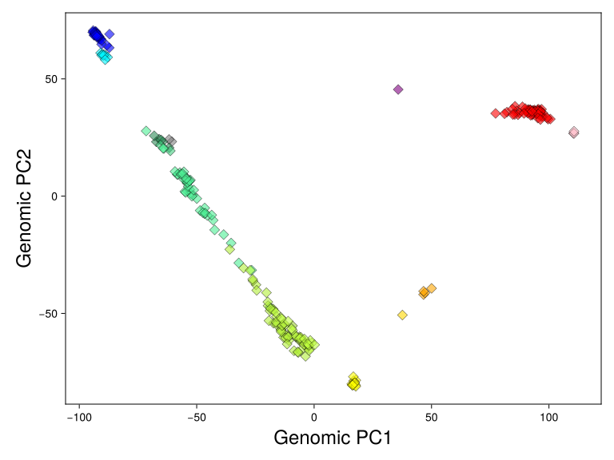
PC1 explains 12.08685% of the total variance.
PC2 explains 6.3917747%.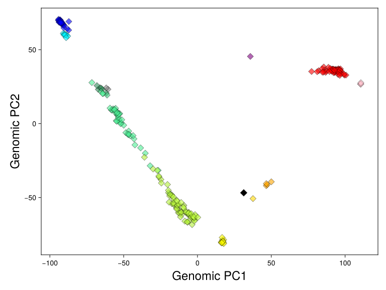
Plot location around ring vs. PC1:
f = CairoMakie.Figure()
ax = Axis(f[1, 1],
title = "", #"Genomic PC1 around ring"
xlabel = "Location around ring (km)", xlabelsize = 24,
ylabel = "Genomic PC1", ylabelsize = 24)
hidedecorations!(ax, label = false, ticklabels = false, ticks = false) # hide background lattice
jitterSize = 100 # in km
x_plot_values = GW_GenoData_indFiltered.indInfo.ring_km .+ jitterSize .* (rand(length(GW_GenoData_indFiltered.indInfo.PC1)) .- 0.5)
y_plot_values = GW_GenoData_indFiltered.indInfo.PC1
for i in eachindex(groups_to_plot_PCA)
selection = GW_GenoData_indFiltered.indInfo.Fst_group .== groups_to_plot_PCA[i]
CairoMakie.scatter!(ax, x_plot_values[selection], y_plot_values[selection], marker = :diamond, color = (group_colors_PCA[i], 0.6), markersize=14, strokewidth=0.5, strokecolor = ("black", 0.7))
end
# add position of reference genome
cd(repoDirectory)
ring_locations = DataFrame(CSV.File("metadata/GW2023_ring_locations.txt"))
refGenome_location = ring_locations.LocationAroundRing[ring_locations.location_short .== "GG"][1]
CairoMakie.scatter!(refGenome_location, refGenomePCAposition[1], marker = :diamond, color="black", markersize=15, strokewidth=0.5)
cd(dataDirectory)
display(f)
if false #set to true to save
save("Figure1C_PCAwholeGenomeAroundRing_fromJulia.png", f, px_per_unit = 2.0)
end┌ Warning: Found `resolution` in the theme when creating a `Scene`. The `resolution` keyword for `Scene`s and `Figure`s has been deprecated. Use `Figure(; size = ...` or `Scene(; size = ...)` instead, which better reflects that this is a unitless size and not a pixel resolution. The key could also come from `set_theme!` calls or related theming functions.
└ @ Makie ~/.julia/packages/Makie/Y3ABD/src/scenes.jl:238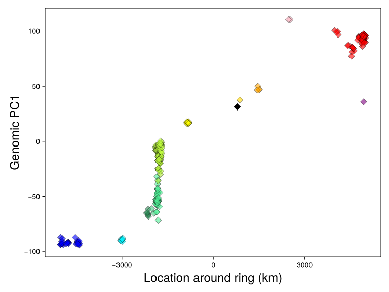
Make a whole-genome PCA just for the western side of the ring
western_groups_to_plot_PCA = ["vir", "vir_misID", "vir_S", "nit", "lud_PK", "lud_KS", "lud_central", "lud_Sath", "lud_ML", "troch_west", "troch_LN"]
western_group_colors_PCA = ["blue", "blue", "turquoise1", "grey", "seagreen4", "seagreen3", "seagreen2", "olivedrab3", "olivedrab2", "olivedrab1", "yellow"]
PCA_wholeGenome = plotPCA(genos_imputed_loaded,
GW_GenoData_indFiltered.indInfo,
western_groups_to_plot_PCA, western_group_colors_PCA;
sampleSet="greenish warblers", regionText="wholeGenome",
flip1=false, flip2=false,
lineOpacity = 0.7, fillOpacity = 0.6,
symbolSize = 14, showTitle = false)
totalObservationVariance = var(PCA_wholeGenome.model)
PC1_variance, PC2_variance = principalvars(PCA_wholeGenome.model)[1:2]
PC1_prop_variance = PC1_variance / totalObservationVariance
PC2_prop_variance = PC2_variance / totalObservationVariance
println("PC1 explains ", 100 * PC1_prop_variance, "% of the total variance.
PC2 explains ", 100 * PC2_prop_variance, "%.")┌ Warning: Found `resolution` in the theme when creating a `Scene`. The `resolution` keyword for `Scene`s and `Figure`s has been deprecated. Use `Figure(; size = ...` or `Scene(; size = ...)` instead, which better reflects that this is a unitless size and not a pixel resolution. The key could also come from `set_theme!` calls or related theming functions.
└ @ Makie ~/.julia/packages/Makie/Y3ABD/src/scenes.jl:238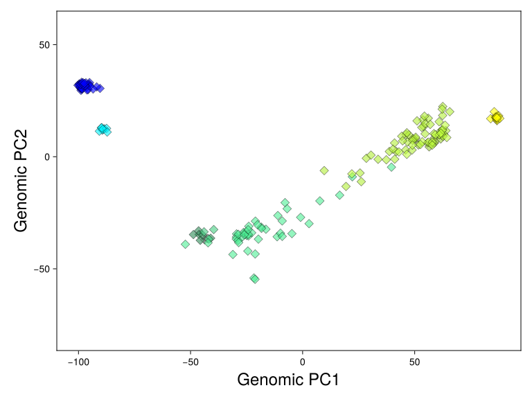
PC1 explains 11.394545% of the total variance.
PC2 explains 1.7678221%.Make a whole-genome PCA just for the eastern side of the ring
eastern_groups_to_plot_PCA = ["troch_LN","troch_EM","obs","plumb_BJ","plumb"]
eastern_group_colors_PCA = ["yellow","gold","orange","pink","red"]
flipPC1 = false
flipPC2 = true
PCA_wholeGenome = plotPCA(genos_imputed_loaded,
GW_GenoData_indFiltered.indInfo,
eastern_groups_to_plot_PCA, eastern_group_colors_PCA;
sampleSet = "greenish warblers", regionText = "wholeGenome",
flip1 = flipPC1, flip2 = flipPC2,
lineOpacity = 0.7, fillOpacity = 0.6,
symbolSize = 14, showTitle = false)
totalObservationVariance = var(PCA_wholeGenome.model)
PC1_variance, PC2_variance = principalvars(PCA_wholeGenome.model)[1:2]
PC1_prop_variance = PC1_variance / totalObservationVariance
PC2_prop_variance = PC2_variance / totalObservationVariance
println("PC1 explains ", 100*PC1_prop_variance, "% of the total variance.
PC2 explains ", 100*PC2_prop_variance, "%.")┌ Warning: Found `resolution` in the theme when creating a `Scene`. The `resolution` keyword for `Scene`s and `Figure`s has been deprecated. Use `Figure(; size = ...` or `Scene(; size = ...)` instead, which better reflects that this is a unitless size and not a pixel resolution. The key could also come from `set_theme!` calls or related theming functions.
└ @ Makie ~/.julia/packages/Makie/Y3ABD/src/scenes.jl:238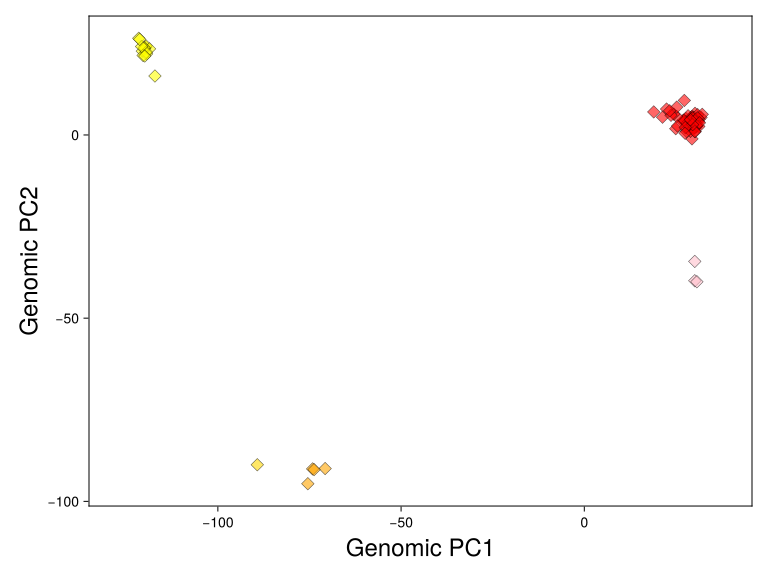
PC1 explains 9.740206% of the total variance.
PC2 explains 1.8479686%.Make PCA plots for individual scaffolds
Define a function for plotting one PCA for a scaffold:
function plotOneScaffoldPCA(groups_to_plot_PCA, group_colors_PCA,
baseName, tagName, scaffold;
flipPC1, flipPC2, showTitle)
regionText = string("chr", scaffold)
filename = string(baseName, tagName, regionText, ".KNNimputedMissing.jld2")
imputed_genos = load(filename, "imputed_genos")
ind_with_metadata_indFiltered = load(filename, "ind_with_metadata_indFiltered")
pos_SNP_filtered_region = load(filename, "pos_SNP_filtered_region")
println(string("Loaded ",filename))
println(string(regionText, ": ", size(imputed_genos,2), " SNPs from ", size(imputed_genos,1), " individuals"))
# flipPC1 = true
# flipPC2 = true
PCAmodel = plotPCA(imputed_genos, ind_with_metadata_indFiltered,
groups_to_plot_PCA, group_colors_PCA;
sampleSet = "greenish warblers", regionText=regionText,
flip1 = flipPC1, flip2 = flipPC2,
lineOpacity = 0.7, fillOpacity = 0.6,
symbolSize = 14, showTitle = showTitle,
xLabelText = string("Chromosome ", scaffold," PC1"), yLabelText = string("Chromosome ", scaffold," PC2"),
showPlot = false)
totalObservationVariance = var(PCAmodel.model)
PC1_variance, PC2_variance = principalvars(PCAmodel.model)[1:2]
PC1_prop_variance = PC1_variance / totalObservationVariance
PC2_prop_variance = PC2_variance / totalObservationVariance
println("PC1 explains ", 100*PC1_prop_variance, "% of the total variance.
PC2 explains ", 100*PC2_prop_variance, "%.")
# add position of reference genome
refGenomePCAposition = predict(PCAmodel.model, zeros(size(imputed_genos, 2)))
flipPC1 && (refGenomePCAposition[1] *= -1) # this flips PC1 if flipPC1 = true
flipPC2 && (refGenomePCAposition[2] *= -1) # same for PC2
CairoMakie.scatter!(refGenomePCAposition[1], refGenomePCAposition[2], marker = :diamond, color="black", markersize=14, strokewidth=0.5)
try
display(PCAmodel.PCAfig)
catch
println("NOTICE: Figure for ", regionText, " could not be shown due to an unknown error.")
end
return PCAmodel
endplotOneScaffoldPCA (generic function with 1 method)Make PCA plots for each chromosome, with option to save:
savefig = false #set to true to save the figures from cells belowfalsescaffold = "gw1"
PCAmodel = plotOneScaffoldPCA(groups_to_plot_PCA, group_colors_PCA,
baseName, tagName, scaffold;
flipPC1=true, flipPC2=false, showTitle=false)
if savefig #set to true to save
filename = string("Figure_", scaffold, "_PCA_allInds_from_Julia.png")
save(filename, PCAmodel.PCAfig, px_per_unit = 2.0)
println("Saved ", filename)
endLoaded GW_genomics_2022_with_new_genome/GW2022_GBS_012NA_files/GW2022_all4plates.genotypes.SNPs_only.whole_genome.Jan2025.chrgw1.KNNimputedMissing.jld2
chrgw1: 80862 SNPs from 257 individuals┌ Warning: Found `resolution` in the theme when creating a `Scene`. The `resolution` keyword for `Scene`s and `Figure`s has been deprecated. Use `Figure(; size = ...` or `Scene(; size = ...)` instead, which better reflects that this is a unitless size and not a pixel resolution. The key could also come from `set_theme!` calls or related theming functions.
└ @ Makie ~/.julia/packages/Makie/Y3ABD/src/scenes.jl:238PC1 explains 11.790371% of the total variance.
PC2 explains 6.068956%.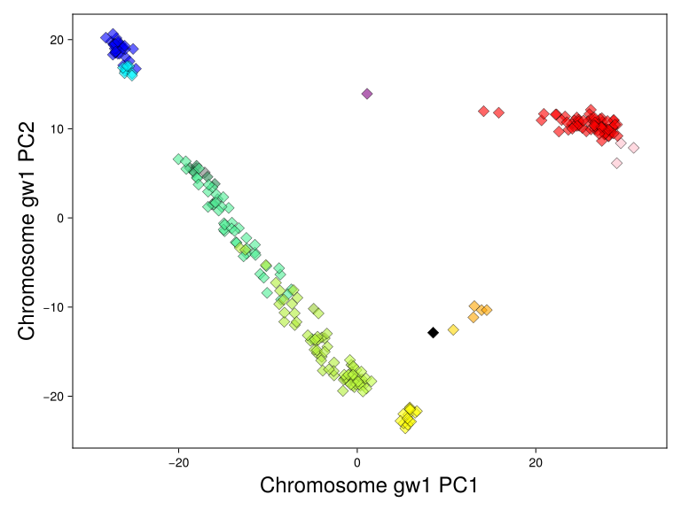
scaffold = "gw1A"
PCAmodel = plotOneScaffoldPCA(groups_to_plot_PCA, group_colors_PCA,
baseName, tagName, scaffold;
flipPC1=false, flipPC2=false, showTitle=false)
if savefig #set to true to save
filename = string("Figure_", scaffold, "_PCA_allInds_from_Julia.png")
save(filename, PCAmodel.PCAfig, px_per_unit = 2.0)
println("Saved ", filename)
endLoaded GW_genomics_2022_with_new_genome/GW2022_GBS_012NA_files/GW2022_all4plates.genotypes.SNPs_only.whole_genome.Jan2025.chrgw1A.KNNimputedMissing.jld2
chrgw1A: 50051 SNPs from 257 individuals┌ Warning: Found `resolution` in the theme when creating a `Scene`. The `resolution` keyword for `Scene`s and `Figure`s has been deprecated. Use `Figure(; size = ...` or `Scene(; size = ...)` instead, which better reflects that this is a unitless size and not a pixel resolution. The key could also come from `set_theme!` calls or related theming functions.
└ @ Makie ~/.julia/packages/Makie/Y3ABD/src/scenes.jl:238PC1 explains 14.3619375% of the total variance.
PC2 explains 8.243913%.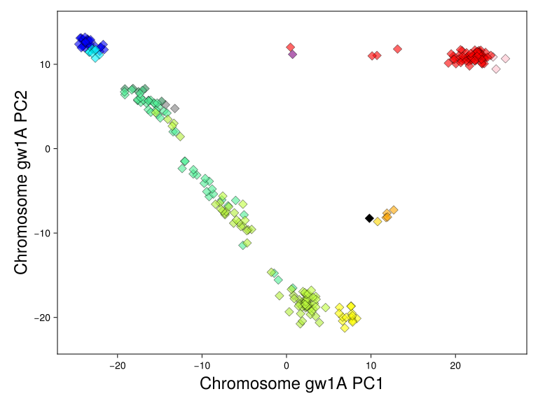
scaffold = "gw2"
PCAmodel = plotOneScaffoldPCA(groups_to_plot_PCA, group_colors_PCA,
baseName, tagName, scaffold;
flipPC1=true, flipPC2=true, showTitle=false)
if savefig #set to true to save
filename = string("Figure_", scaffold, "_PCA_allInds_from_Julia.png")
save(filename, PCAmodel.PCAfig, px_per_unit = 2.0)
println("Saved ", filename)
endLoaded GW_genomics_2022_with_new_genome/GW2022_GBS_012NA_files/GW2022_all4plates.genotypes.SNPs_only.whole_genome.Jan2025.chrgw2.KNNimputedMissing.jld2
chrgw2: 93292 SNPs from 257 individuals┌ Warning: Found `resolution` in the theme when creating a `Scene`. The `resolution` keyword for `Scene`s and `Figure`s has been deprecated. Use `Figure(; size = ...` or `Scene(; size = ...)` instead, which better reflects that this is a unitless size and not a pixel resolution. The key could also come from `set_theme!` calls or related theming functions.
└ @ Makie ~/.julia/packages/Makie/Y3ABD/src/scenes.jl:238PC1 explains 13.293323% of the total variance.
PC2 explains 6.3256464%.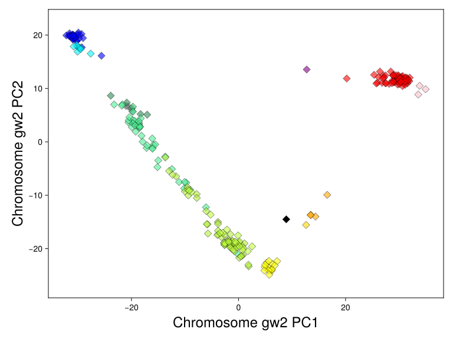
scaffold = "gw3"
PCAmodel = plotOneScaffoldPCA(groups_to_plot_PCA, group_colors_PCA,
baseName, tagName, scaffold;
flipPC1=true, flipPC2=true, showTitle=false)
if savefig #set to true to save
filename = string("Figure_", scaffold, "_PCA_allInds_from_Julia.png")
save(filename, PCAmodel.PCAfig, px_per_unit = 2.0)
println("Saved ", filename)
endLoaded GW_genomics_2022_with_new_genome/GW2022_GBS_012NA_files/GW2022_all4plates.genotypes.SNPs_only.whole_genome.Jan2025.chrgw3.KNNimputedMissing.jld2
chrgw3: 82372 SNPs from 257 individuals┌ Warning: Found `resolution` in the theme when creating a `Scene`. The `resolution` keyword for `Scene`s and `Figure`s has been deprecated. Use `Figure(; size = ...` or `Scene(; size = ...)` instead, which better reflects that this is a unitless size and not a pixel resolution. The key could also come from `set_theme!` calls or related theming functions.
└ @ Makie ~/.julia/packages/Makie/Y3ABD/src/scenes.jl:238PC1 explains 12.753571% of the total variance.
PC2 explains 6.4516797%.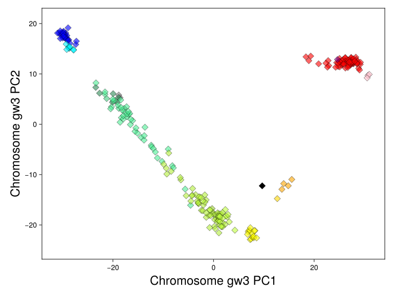
scaffold = "gw4"
PCAmodel = plotOneScaffoldPCA(groups_to_plot_PCA, group_colors_PCA,
baseName, tagName, scaffold;
flipPC1=false, flipPC2=true, showTitle=false)
if savefig #set to true to save
filename = string("Figure_", scaffold, "_PCA_allInds_from_Julia.png")
save(filename, PCAmodel.PCAfig, px_per_unit = 2.0)
println("Saved ", filename)
endLoaded GW_genomics_2022_with_new_genome/GW2022_GBS_012NA_files/GW2022_all4plates.genotypes.SNPs_only.whole_genome.Jan2025.chrgw4.KNNimputedMissing.jld2
chrgw4: 49980 SNPs from 257 individuals┌ Warning: Found `resolution` in the theme when creating a `Scene`. The `resolution` keyword for `Scene`s and `Figure`s has been deprecated. Use `Figure(; size = ...` or `Scene(; size = ...)` instead, which better reflects that this is a unitless size and not a pixel resolution. The key could also come from `set_theme!` calls or related theming functions.
└ @ Makie ~/.julia/packages/Makie/Y3ABD/src/scenes.jl:238PC1 explains 11.8756075% of the total variance.
PC2 explains 6.052506%.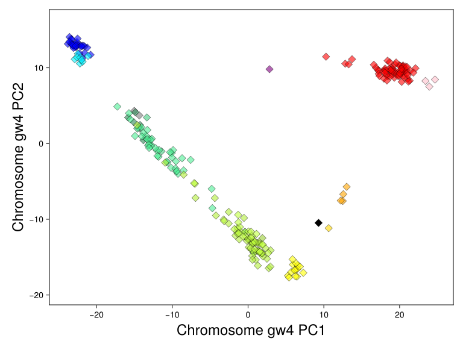
scaffold = "gw4A"
PCAmodel = plotOneScaffoldPCA(groups_to_plot_PCA, group_colors_PCA,
baseName, tagName, scaffold;
flipPC1=true, flipPC2=true, showTitle=false)
if savefig #set to true to save
filename = string("Figure_", scaffold, "_PCA_allInds_from_Julia.png")
save(filename, PCAmodel.PCAfig, px_per_unit = 2.0)
println("Saved ", filename)
endLoaded GW_genomics_2022_with_new_genome/GW2022_GBS_012NA_files/GW2022_all4plates.genotypes.SNPs_only.whole_genome.Jan2025.chrgw4A.KNNimputedMissing.jld2
chrgw4A: 18467 SNPs from 257 individuals┌ Warning: Found `resolution` in the theme when creating a `Scene`. The `resolution` keyword for `Scene`s and `Figure`s has been deprecated. Use `Figure(; size = ...` or `Scene(; size = ...)` instead, which better reflects that this is a unitless size and not a pixel resolution. The key could also come from `set_theme!` calls or related theming functions.
└ @ Makie ~/.julia/packages/Makie/Y3ABD/src/scenes.jl:238PC1 explains 8.10225% of the total variance.
PC2 explains 6.4409094%.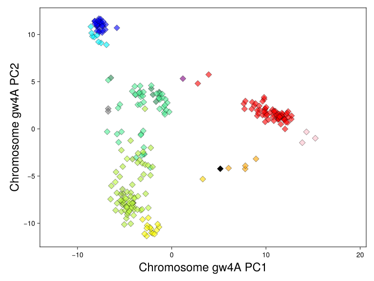
scaffold = "gw5"
PCAmodel = plotOneScaffoldPCA(groups_to_plot_PCA, group_colors_PCA,
baseName, tagName, scaffold;
flipPC1=true, flipPC2=true, showTitle=false)
if savefig #set to true to save
filename = string("Figure_", scaffold, "_PCA_allInds_from_Julia.png")
save(filename, PCAmodel.PCAfig, px_per_unit = 2.0)
println("Saved ", filename)
endLoaded GW_genomics_2022_with_new_genome/GW2022_GBS_012NA_files/GW2022_all4plates.genotypes.SNPs_only.whole_genome.Jan2025.chrgw5.KNNimputedMissing.jld2
chrgw5: 55329 SNPs from 257 individuals┌ Warning: Found `resolution` in the theme when creating a `Scene`. The `resolution` keyword for `Scene`s and `Figure`s has been deprecated. Use `Figure(; size = ...` or `Scene(; size = ...)` instead, which better reflects that this is a unitless size and not a pixel resolution. The key could also come from `set_theme!` calls or related theming functions.
└ @ Makie ~/.julia/packages/Makie/Y3ABD/src/scenes.jl:238PC1 explains 12.462368% of the total variance.
PC2 explains 6.6817045%.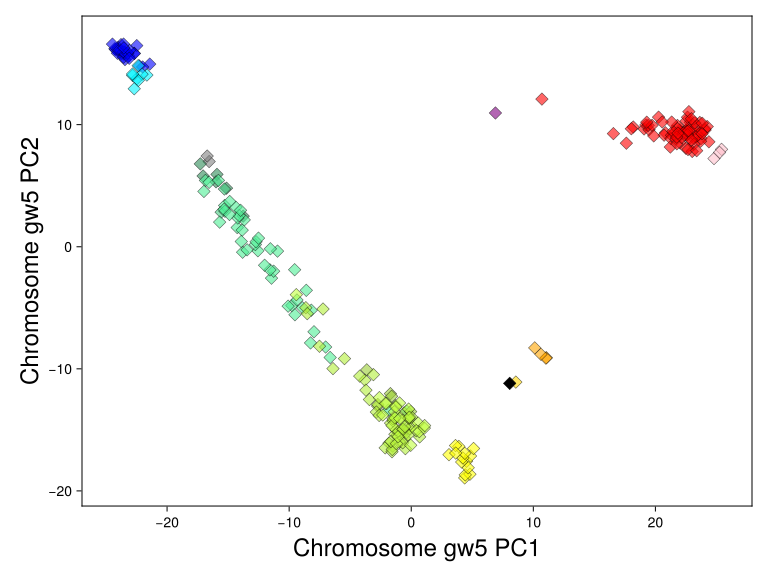
scaffold = "gw6"
PCAmodel = plotOneScaffoldPCA(groups_to_plot_PCA, group_colors_PCA,
baseName, tagName, scaffold;
flipPC1=true, flipPC2=true, showTitle=false)
if savefig #set to true to save
filename = string("Figure_", scaffold, "_PCA_allInds_from_Julia.png")
save(filename, PCAmodel.PCAfig, px_per_unit = 2.0)
println("Saved ", filename)
endLoaded GW_genomics_2022_with_new_genome/GW2022_GBS_012NA_files/GW2022_all4plates.genotypes.SNPs_only.whole_genome.Jan2025.chrgw6.KNNimputedMissing.jld2
chrgw6: 40175 SNPs from 257 individuals┌ Warning: Found `resolution` in the theme when creating a `Scene`. The `resolution` keyword for `Scene`s and `Figure`s has been deprecated. Use `Figure(; size = ...` or `Scene(; size = ...)` instead, which better reflects that this is a unitless size and not a pixel resolution. The key could also come from `set_theme!` calls or related theming functions.
└ @ Makie ~/.julia/packages/Makie/Y3ABD/src/scenes.jl:238PC1 explains 10.859537% of the total variance.
PC2 explains 5.9476075%.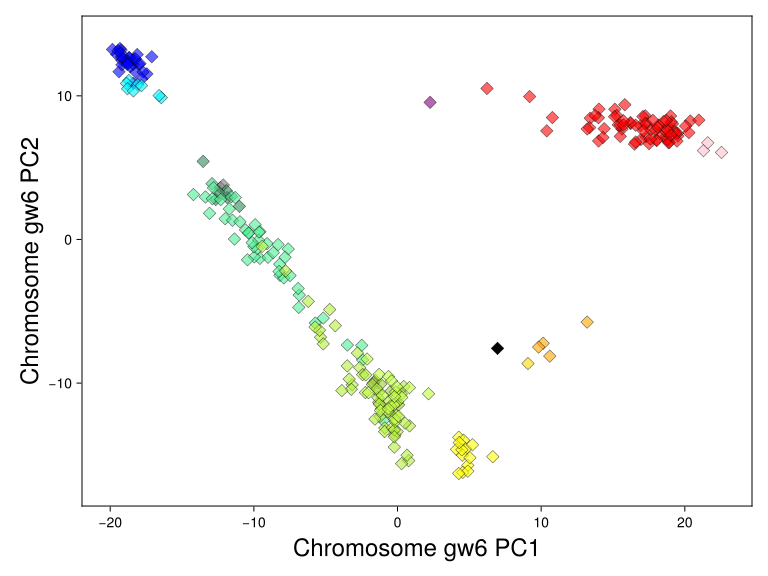
scaffold = "gw7"
PCAmodel = plotOneScaffoldPCA(groups_to_plot_PCA, group_colors_PCA,
baseName, tagName, scaffold;
flipPC1=true, flipPC2=false, showTitle=false)
if savefig #set to true to save
filename = string("Figure_", scaffold, "_PCA_allInds_from_Julia.png")
save(filename, PCAmodel.PCAfig, px_per_unit = 2.0)
println("Saved ", filename)
endLoaded GW_genomics_2022_with_new_genome/GW2022_GBS_012NA_files/GW2022_all4plates.genotypes.SNPs_only.whole_genome.Jan2025.chrgw7.KNNimputedMissing.jld2
chrgw7: 36575 SNPs from 257 individuals┌ Warning: Found `resolution` in the theme when creating a `Scene`. The `resolution` keyword for `Scene`s and `Figure`s has been deprecated. Use `Figure(; size = ...` or `Scene(; size = ...)` instead, which better reflects that this is a unitless size and not a pixel resolution. The key could also come from `set_theme!` calls or related theming functions.
└ @ Makie ~/.julia/packages/Makie/Y3ABD/src/scenes.jl:238PC1 explains 11.095749% of the total variance.
PC2 explains 6.085347%.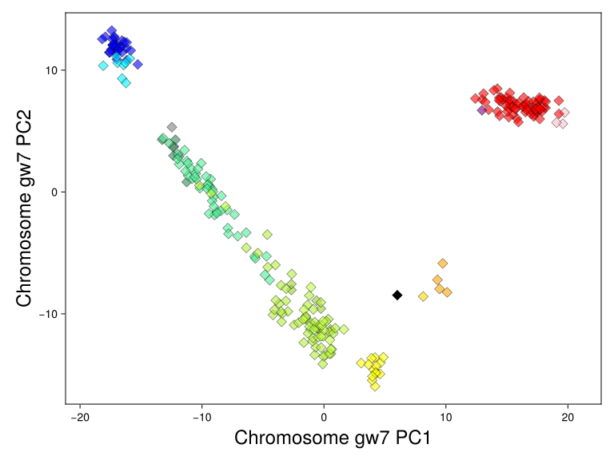
scaffold = "gw8"
PCAmodel = plotOneScaffoldPCA(groups_to_plot_PCA, group_colors_PCA,
baseName, tagName, scaffold;
flipPC1=true, flipPC2=false, showTitle=false)
if savefig #set to true to save
filename = string("Figure_", scaffold, "_PCA_allInds_from_Julia.png")
save(filename, PCAmodel.PCAfig, px_per_unit = 2.0)
println("Saved ", filename)
endLoaded GW_genomics_2022_with_new_genome/GW2022_GBS_012NA_files/GW2022_all4plates.genotypes.SNPs_only.whole_genome.Jan2025.chrgw8.KNNimputedMissing.jld2
chrgw8: 37818 SNPs from 257 individuals┌ Warning: Found `resolution` in the theme when creating a `Scene`. The `resolution` keyword for `Scene`s and `Figure`s has been deprecated. Use `Figure(; size = ...` or `Scene(; size = ...)` instead, which better reflects that this is a unitless size and not a pixel resolution. The key could also come from `set_theme!` calls or related theming functions.
└ @ Makie ~/.julia/packages/Makie/Y3ABD/src/scenes.jl:238PC1 explains 11.007252% of the total variance.
PC2 explains 5.915666%.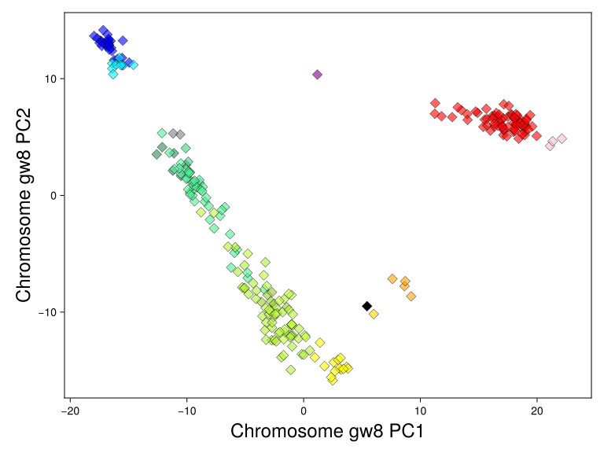
scaffold = "gw9"
PCAmodel = plotOneScaffoldPCA(groups_to_plot_PCA, group_colors_PCA,
baseName, tagName, scaffold;
flipPC1=true, flipPC2=true, showTitle=false)
if savefig #set to true to save
filename = string("Figure_", scaffold, "_PCA_allInds_from_Julia.png")
save(filename, PCAmodel.PCAfig, px_per_unit = 2.0)
println("Saved ", filename)
endLoaded GW_genomics_2022_with_new_genome/GW2022_GBS_012NA_files/GW2022_all4plates.genotypes.SNPs_only.whole_genome.Jan2025.chrgw9.KNNimputedMissing.jld2
chrgw9: 38180 SNPs from 257 individuals┌ Warning: Found `resolution` in the theme when creating a `Scene`. The `resolution` keyword for `Scene`s and `Figure`s has been deprecated. Use `Figure(; size = ...` or `Scene(; size = ...)` instead, which better reflects that this is a unitless size and not a pixel resolution. The key could also come from `set_theme!` calls or related theming functions.
└ @ Makie ~/.julia/packages/Makie/Y3ABD/src/scenes.jl:238PC1 explains 11.258947% of the total variance.
PC2 explains 5.450791%.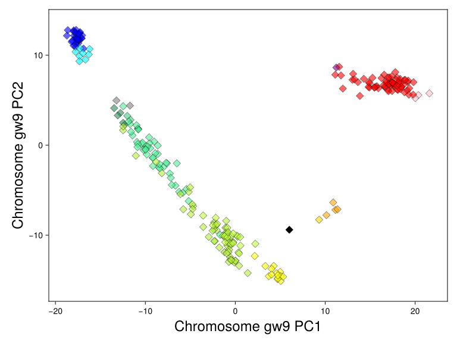
scaffold = "gw10"
PCAmodel = plotOneScaffoldPCA(groups_to_plot_PCA, group_colors_PCA,
baseName, tagName, scaffold;
flipPC1=true, flipPC2=true, showTitle=false)
if savefig #set to true to save
filename = string("Figure_", scaffold, "_PCA_allInds_from_Julia.png")
save(filename, PCAmodel.PCAfig, px_per_unit = 2.0)
println("Saved ", filename)
endLoaded GW_genomics_2022_with_new_genome/GW2022_GBS_012NA_files/GW2022_all4plates.genotypes.SNPs_only.whole_genome.Jan2025.chrgw10.KNNimputedMissing.jld2
chrgw10: 26962 SNPs from 257 individuals┌ Warning: Found `resolution` in the theme when creating a `Scene`. The `resolution` keyword for `Scene`s and `Figure`s has been deprecated. Use `Figure(; size = ...` or `Scene(; size = ...)` instead, which better reflects that this is a unitless size and not a pixel resolution. The key could also come from `set_theme!` calls or related theming functions.
└ @ Makie ~/.julia/packages/Makie/Y3ABD/src/scenes.jl:238PC1 explains 11.141077% of the total variance.
PC2 explains 5.4113245%.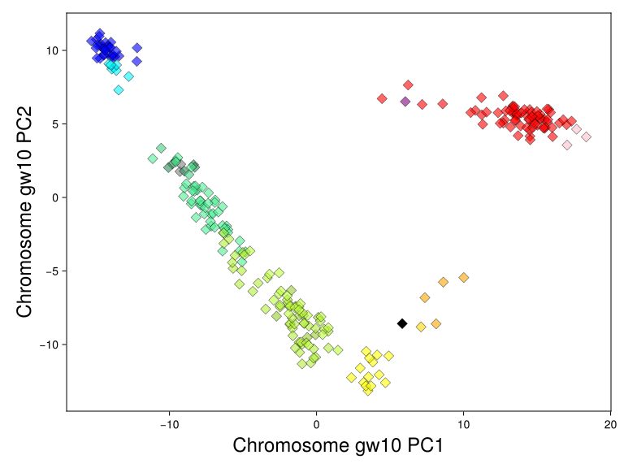
scaffold = "gw11"
PCAmodel = plotOneScaffoldPCA(groups_to_plot_PCA, group_colors_PCA,
baseName, tagName, scaffold;
flipPC1=false, flipPC2=true, showTitle=false)
if savefig #set to true to save
filename = string("Figure_", scaffold, "_PCA_allInds_from_Julia.png")
save(filename, PCAmodel.PCAfig, px_per_unit = 2.0)
println("Saved ", filename)
endLoaded GW_genomics_2022_with_new_genome/GW2022_GBS_012NA_files/GW2022_all4plates.genotypes.SNPs_only.whole_genome.Jan2025.chrgw11.KNNimputedMissing.jld2
chrgw11: 27683 SNPs from 257 individuals┌ Warning: Found `resolution` in the theme when creating a `Scene`. The `resolution` keyword for `Scene`s and `Figure`s has been deprecated. Use `Figure(; size = ...` or `Scene(; size = ...)` instead, which better reflects that this is a unitless size and not a pixel resolution. The key could also come from `set_theme!` calls or related theming functions.
└ @ Makie ~/.julia/packages/Makie/Y3ABD/src/scenes.jl:238PC1 explains 10.932791% of the total variance.
PC2 explains 5.910336%.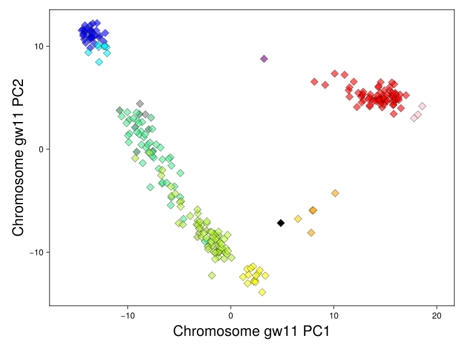
scaffold = "gw12"
PCAmodel = plotOneScaffoldPCA(groups_to_plot_PCA, group_colors_PCA,
baseName, tagName, scaffold;
flipPC1=true, flipPC2=true, showTitle=false)
if savefig #set to true to save
filename = string("Figure_", scaffold, "_PCA_allInds_from_Julia.png")
save(filename, PCAmodel.PCAfig, px_per_unit = 2.0)
println("Saved ", filename)
endLoaded GW_genomics_2022_with_new_genome/GW2022_GBS_012NA_files/GW2022_all4plates.genotypes.SNPs_only.whole_genome.Jan2025.chrgw12.KNNimputedMissing.jld2
chrgw12: 33294 SNPs from 257 individuals┌ Warning: Found `resolution` in the theme when creating a `Scene`. The `resolution` keyword for `Scene`s and `Figure`s has been deprecated. Use `Figure(; size = ...` or `Scene(; size = ...)` instead, which better reflects that this is a unitless size and not a pixel resolution. The key could also come from `set_theme!` calls or related theming functions.
└ @ Makie ~/.julia/packages/Makie/Y3ABD/src/scenes.jl:238PC1 explains 11.808325% of the total variance.
PC2 explains 5.742847%.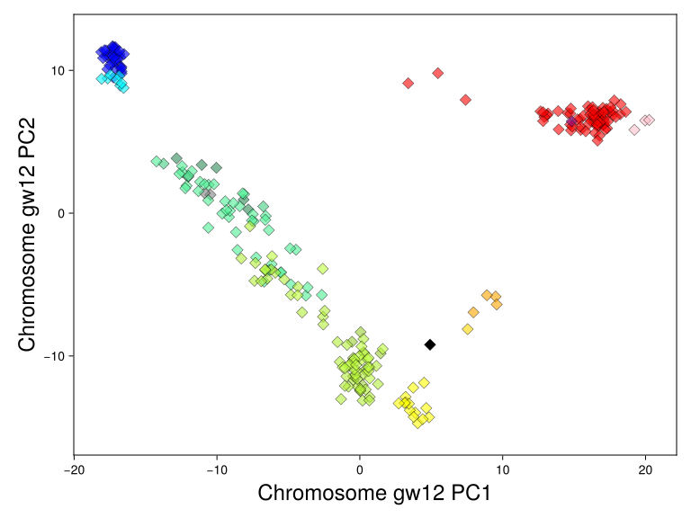
scaffold = "gw13"
PCAmodel = plotOneScaffoldPCA(groups_to_plot_PCA, group_colors_PCA,
baseName, tagName, scaffold;
flipPC1=false, flipPC2=true, showTitle=false)
if savefig #set to true to save
filename = string("Figure_", scaffold, "_PCA_allInds_from_Julia.png")
save(filename, PCAmodel.PCAfig, px_per_unit = 2.0)
println("Saved ", filename)
endLoaded GW_genomics_2022_with_new_genome/GW2022_GBS_012NA_files/GW2022_all4plates.genotypes.SNPs_only.whole_genome.Jan2025.chrgw13.KNNimputedMissing.jld2
chrgw13: 33543 SNPs from 257 individuals┌ Warning: Found `resolution` in the theme when creating a `Scene`. The `resolution` keyword for `Scene`s and `Figure`s has been deprecated. Use `Figure(; size = ...` or `Scene(; size = ...)` instead, which better reflects that this is a unitless size and not a pixel resolution. The key could also come from `set_theme!` calls or related theming functions.
└ @ Makie ~/.julia/packages/Makie/Y3ABD/src/scenes.jl:238PC1 explains 13.365666% of the total variance.
PC2 explains 7.26101%.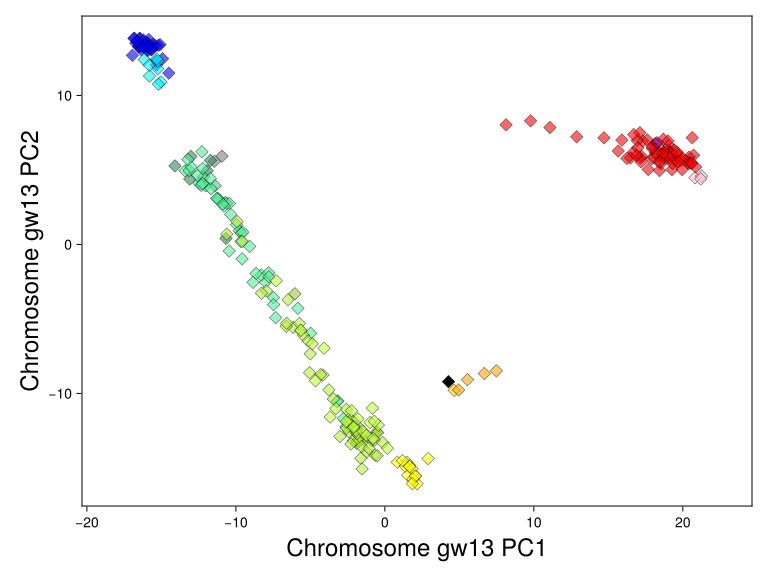
scaffold = "gw14"
PCAmodel = plotOneScaffoldPCA(groups_to_plot_PCA, group_colors_PCA,
baseName, tagName, scaffold;
flipPC1=true, flipPC2=true, showTitle=false)
if savefig #set to true to save
filename = string("Figure_", scaffold, "_PCA_allInds_from_Julia.png")
save(filename, PCAmodel.PCAfig, px_per_unit = 2.0)
println("Saved ", filename)
endLoaded GW_genomics_2022_with_new_genome/GW2022_GBS_012NA_files/GW2022_all4plates.genotypes.SNPs_only.whole_genome.Jan2025.chrgw14.KNNimputedMissing.jld2
chrgw14: 30969 SNPs from 257 individuals┌ Warning: Found `resolution` in the theme when creating a `Scene`. The `resolution` keyword for `Scene`s and `Figure`s has been deprecated. Use `Figure(; size = ...` or `Scene(; size = ...)` instead, which better reflects that this is a unitless size and not a pixel resolution. The key could also come from `set_theme!` calls or related theming functions.
└ @ Makie ~/.julia/packages/Makie/Y3ABD/src/scenes.jl:238PC1 explains 11.530412% of the total variance.
PC2 explains 6.537424%.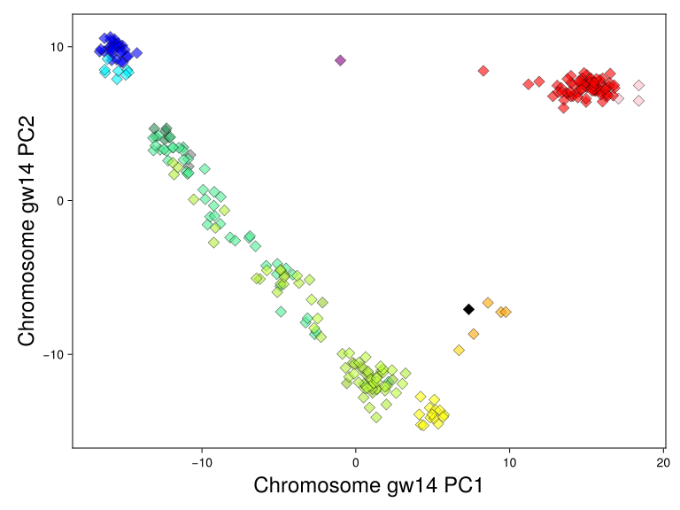
scaffold = "gw15"
PCAmodel = plotOneScaffoldPCA(groups_to_plot_PCA, group_colors_PCA,
baseName, tagName, scaffold;
flipPC1=true, flipPC2=false, showTitle=false)
if savefig #set to true to save
filename = string("Figure_", scaffold, "_PCA_allInds_from_Julia.png")
save(filename, PCAmodel.PCAfig, px_per_unit = 2.0)
println("Saved ", filename)
endLoaded GW_genomics_2022_with_new_genome/GW2022_GBS_012NA_files/GW2022_all4plates.genotypes.SNPs_only.whole_genome.Jan2025.chrgw15.KNNimputedMissing.jld2
chrgw15: 27517 SNPs from 257 individuals┌ Warning: Found `resolution` in the theme when creating a `Scene`. The `resolution` keyword for `Scene`s and `Figure`s has been deprecated. Use `Figure(; size = ...` or `Scene(; size = ...)` instead, which better reflects that this is a unitless size and not a pixel resolution. The key could also come from `set_theme!` calls or related theming functions.
└ @ Makie ~/.julia/packages/Makie/Y3ABD/src/scenes.jl:238PC1 explains 12.024455% of the total variance.
PC2 explains 6.3510194%.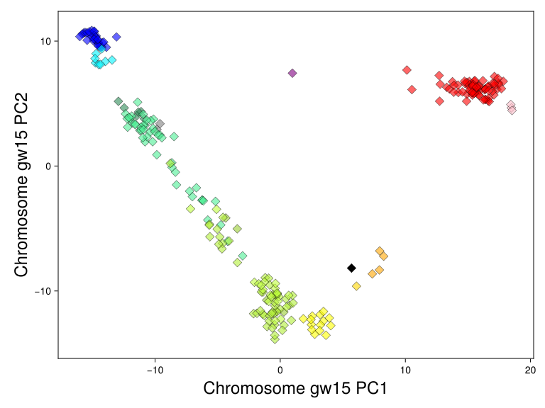
scaffold = "gw17"
PCAmodel = plotOneScaffoldPCA(groups_to_plot_PCA, group_colors_PCA,
baseName, tagName, scaffold;
flipPC1=true, flipPC2=true, showTitle=false)
if savefig #set to true to save
filename = string("Figure_", scaffold, "_PCA_allInds_from_Julia.png")
save(filename, PCAmodel.PCAfig, px_per_unit = 2.0)
println("Saved ", filename)
endLoaded GW_genomics_2022_with_new_genome/GW2022_GBS_012NA_files/GW2022_all4plates.genotypes.SNPs_only.whole_genome.Jan2025.chrgw17.KNNimputedMissing.jld2
chrgw17: 26313 SNPs from 257 individuals┌ Warning: Found `resolution` in the theme when creating a `Scene`. The `resolution` keyword for `Scene`s and `Figure`s has been deprecated. Use `Figure(; size = ...` or `Scene(; size = ...)` instead, which better reflects that this is a unitless size and not a pixel resolution. The key could also come from `set_theme!` calls or related theming functions.
└ @ Makie ~/.julia/packages/Makie/Y3ABD/src/scenes.jl:238PC1 explains 10.918732% of the total variance.
PC2 explains 6.300656%.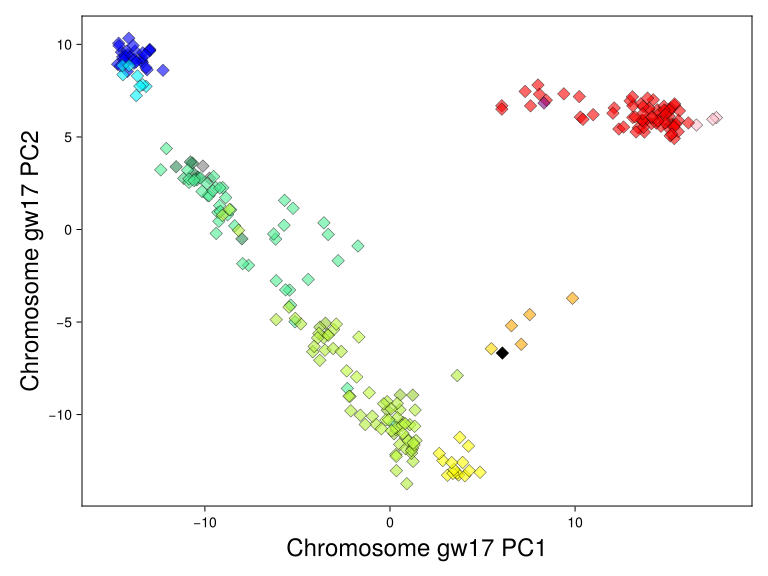
scaffold = "gw18"
PCAmodel = plotOneScaffoldPCA(groups_to_plot_PCA, group_colors_PCA,
baseName, tagName, scaffold;
flipPC1=true, flipPC2=true, showTitle=false)
if savefig #set to true to save
filename = string("Figure_", scaffold, "_PCA_allInds_from_Julia.png")
save(filename, PCAmodel.PCAfig, px_per_unit = 2.0)
println("Saved ", filename)
endLoaded GW_genomics_2022_with_new_genome/GW2022_GBS_012NA_files/GW2022_all4plates.genotypes.SNPs_only.whole_genome.Jan2025.chrgw18.KNNimputedMissing.jld2
chrgw18: 19359 SNPs from 257 individuals┌ Warning: Found `resolution` in the theme when creating a `Scene`. The `resolution` keyword for `Scene`s and `Figure`s has been deprecated. Use `Figure(; size = ...` or `Scene(; size = ...)` instead, which better reflects that this is a unitless size and not a pixel resolution. The key could also come from `set_theme!` calls or related theming functions.
└ @ Makie ~/.julia/packages/Makie/Y3ABD/src/scenes.jl:238PC1 explains 13.948867% of the total variance.
PC2 explains 8.864708%.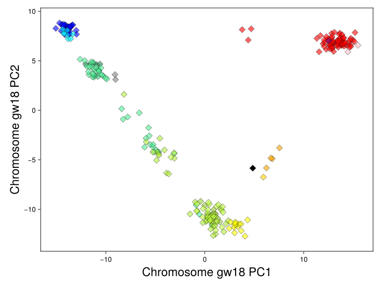
scaffold = "gw19"
PCAmodel = plotOneScaffoldPCA(groups_to_plot_PCA, group_colors_PCA,
baseName, tagName, scaffold;
flipPC1=true, flipPC2=true, showTitle=false)
if savefig #set to true to save
filename = string("Figure_", scaffold, "_PCA_allInds_from_Julia.png")
save(filename, PCAmodel.PCAfig, px_per_unit = 2.0)
println("Saved ", filename)
endLoaded GW_genomics_2022_with_new_genome/GW2022_GBS_012NA_files/GW2022_all4plates.genotypes.SNPs_only.whole_genome.Jan2025.chrgw19.KNNimputedMissing.jld2
chrgw19: 25414 SNPs from 257 individuals┌ Warning: Found `resolution` in the theme when creating a `Scene`. The `resolution` keyword for `Scene`s and `Figure`s has been deprecated. Use `Figure(; size = ...` or `Scene(; size = ...)` instead, which better reflects that this is a unitless size and not a pixel resolution. The key could also come from `set_theme!` calls or related theming functions.
└ @ Makie ~/.julia/packages/Makie/Y3ABD/src/scenes.jl:238PC1 explains 9.869666% of the total variance.
PC2 explains 5.4673886%.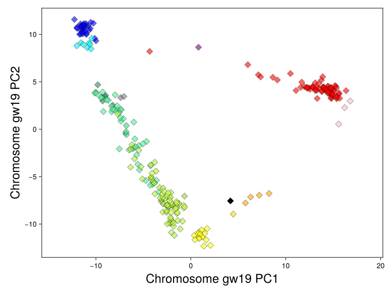
scaffold = "gw20"
PCAmodel = plotOneScaffoldPCA(groups_to_plot_PCA, group_colors_PCA,
baseName, tagName, scaffold;
flipPC1=true, flipPC2=true, showTitle=false)
if savefig #set to true to save
filename = string("Figure_", scaffold, "_PCA_allInds_from_Julia.png")
save(filename, PCAmodel.PCAfig, px_per_unit = 2.0)
println("Saved ", filename)
endLoaded GW_genomics_2022_with_new_genome/GW2022_GBS_012NA_files/GW2022_all4plates.genotypes.SNPs_only.whole_genome.Jan2025.chrgw20.KNNimputedMissing.jld2
chrgw20: 32739 SNPs from 257 individuals┌ Warning: Found `resolution` in the theme when creating a `Scene`. The `resolution` keyword for `Scene`s and `Figure`s has been deprecated. Use `Figure(; size = ...` or `Scene(; size = ...)` instead, which better reflects that this is a unitless size and not a pixel resolution. The key could also come from `set_theme!` calls or related theming functions.
└ @ Makie ~/.julia/packages/Makie/Y3ABD/src/scenes.jl:238PC1 explains 13.309981% of the total variance.
PC2 explains 8.098767%.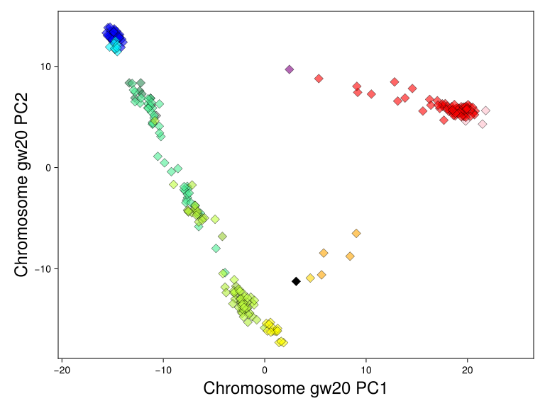
scaffold = "gw21"
PCAmodel = plotOneScaffoldPCA(groups_to_plot_PCA, group_colors_PCA,
baseName, tagName, scaffold;
flipPC1=true, flipPC2=true, showTitle=false)
if savefig #set to true to save
filename = string("Figure_", scaffold, "_PCA_allInds_from_Julia.png")
save(filename, PCAmodel.PCAfig, px_per_unit = 2.0)
println("Saved ", filename)
endLoaded GW_genomics_2022_with_new_genome/GW2022_GBS_012NA_files/GW2022_all4plates.genotypes.SNPs_only.whole_genome.Jan2025.chrgw21.KNNimputedMissing.jld2
chrgw21: 13321 SNPs from 257 individuals┌ Warning: Found `resolution` in the theme when creating a `Scene`. The `resolution` keyword for `Scene`s and `Figure`s has been deprecated. Use `Figure(; size = ...` or `Scene(; size = ...)` instead, which better reflects that this is a unitless size and not a pixel resolution. The key could also come from `set_theme!` calls or related theming functions.
└ @ Makie ~/.julia/packages/Makie/Y3ABD/src/scenes.jl:238PC1 explains 10.157121% of the total variance.
PC2 explains 5.943965%.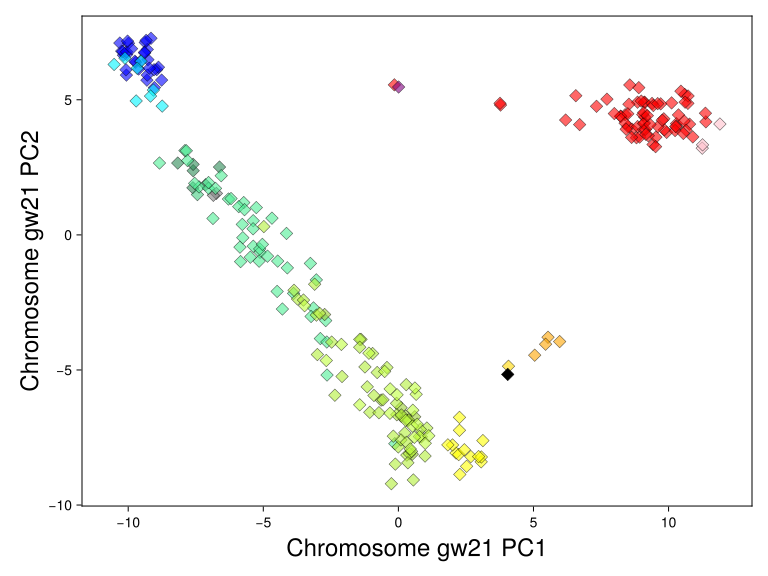
scaffold = "gw22"
PCAmodel = plotOneScaffoldPCA(groups_to_plot_PCA, group_colors_PCA,
baseName, tagName, scaffold;
flipPC1=true, flipPC2=false, showTitle=false)
if savefig #set to true to save
filename = string("Figure_", scaffold, "_PCA_allInds_from_Julia.png")
save(filename, PCAmodel.PCAfig, px_per_unit = 2.0)
println("Saved ", filename)
endLoaded GW_genomics_2022_with_new_genome/GW2022_GBS_012NA_files/GW2022_all4plates.genotypes.SNPs_only.whole_genome.Jan2025.chrgw22.KNNimputedMissing.jld2
chrgw22: 5473 SNPs from 257 individuals
PC1 explains 13.285248┌ Warning: Found `resolution` in the theme when creating a `Scene`. The `resolution` keyword for `Scene`s and `Figure`s has been deprecated. Use `Figure(; size = ...` or `Scene(; size = ...)` instead, which better reflects that this is a unitless size and not a pixel resolution. The key could also come from `set_theme!` calls or related theming functions.
└ @ Makie ~/.julia/packages/Makie/Y3ABD/src/scenes.jl:238% of the total variance.
PC2 explains 8.581498%.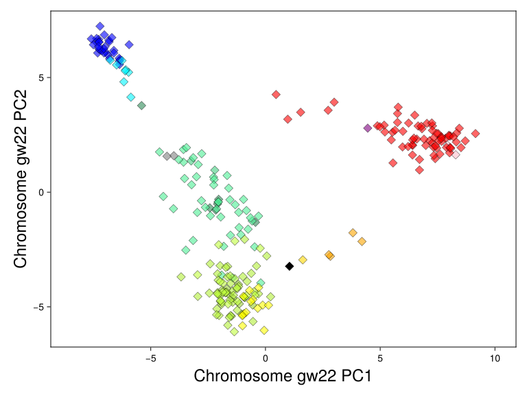
scaffold = "gw23"
PCAmodel = plotOneScaffoldPCA(groups_to_plot_PCA, group_colors_PCA,
baseName, tagName, scaffold;
flipPC1=true, flipPC2=true, showTitle=false)
if savefig #set to true to save
filename = string("Figure_", scaffold, "_PCA_allInds_from_Julia.png")
save(filename, PCAmodel.PCAfig, px_per_unit = 2.0)
println("Saved ", filename)
endLoaded GW_genomics_2022_with_new_genome/GW2022_GBS_012NA_files/GW2022_all4plates.genotypes.SNPs_only.whole_genome.Jan2025.chrgw23.KNNimputedMissing.jld2
chrgw23: 13949 SNPs from 257 individuals┌ Warning: Found `resolution` in the theme when creating a `Scene`. The `resolution` keyword for `Scene`s and `Figure`s has been deprecated. Use `Figure(; size = ...` or `Scene(; size = ...)` instead, which better reflects that this is a unitless size and not a pixel resolution. The key could also come from `set_theme!` calls or related theming functions.
└ @ Makie ~/.julia/packages/Makie/Y3ABD/src/scenes.jl:238PC1 explains 10.519924% of the total variance.
PC2 explains 6.485574%.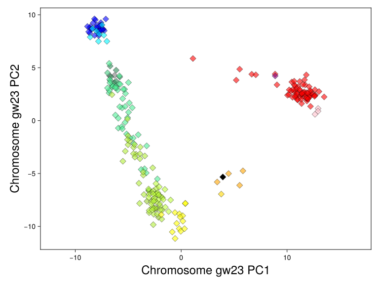
scaffold = "gw24"
PCAmodel = plotOneScaffoldPCA(groups_to_plot_PCA, group_colors_PCA,
baseName, tagName, scaffold;
flipPC1=true, flipPC2=true, showTitle=false)
if savefig #set to true to save
filename = string("Figure_", scaffold, "_PCA_allInds_from_Julia.png")
save(filename, PCAmodel.PCAfig, px_per_unit = 2.0)
println("Saved ", filename)
endLoaded GW_genomics_2022_with_new_genome/GW2022_GBS_012NA_files/GW2022_all4plates.genotypes.SNPs_only.whole_genome.Jan2025.chrgw24.KNNimputedMissing.jld2
chrgw24: 13821 SNPs from 257 individuals┌ Warning: Found `resolution` in the theme when creating a `Scene`. The `resolution` keyword for `Scene`s and `Figure`s has been deprecated. Use `Figure(; size = ...` or `Scene(; size = ...)` instead, which better reflects that this is a unitless size and not a pixel resolution. The key could also come from `set_theme!` calls or related theming functions.
└ @ Makie ~/.julia/packages/Makie/Y3ABD/src/scenes.jl:238PC1 explains 8.532888% of the total variance.
PC2 explains 5.108733%.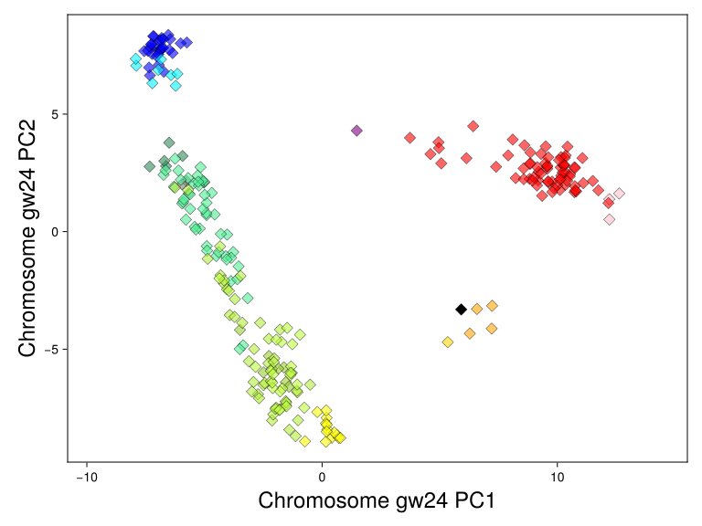
scaffold = "gw25"
PCAmodel = plotOneScaffoldPCA(groups_to_plot_PCA, group_colors_PCA,
baseName, tagName, scaffold;
flipPC1=true, flipPC2=true, showTitle=false)
if savefig #set to true to save
filename = string("Figure_", scaffold, "_PCA_allInds_from_Julia.png")
save(filename, PCAmodel.PCAfig, px_per_unit = 2.0)
println("Saved ", filename)
endLoaded GW_genomics_2022_with_new_genome/GW2022_GBS_012NA_files/GW2022_all4plates.genotypes.SNPs_only.whole_genome.Jan2025.chrgw25.KNNimputedMissing.jld2
chrgw25: 3794 SNPs from 257 individuals
PC1 explains 17.002586% of the total variance.
PC2 explains 11.373987%.┌ Warning: Found `resolution` in the theme when creating a `Scene`. The `resolution` keyword for `Scene`s and `Figure`s has been deprecated. Use `Figure(; size = ...` or `Scene(; size = ...)` instead, which better reflects that this is a unitless size and not a pixel resolution. The key could also come from `set_theme!` calls or related theming functions.
└ @ Makie ~/.julia/packages/Makie/Y3ABD/src/scenes.jl:238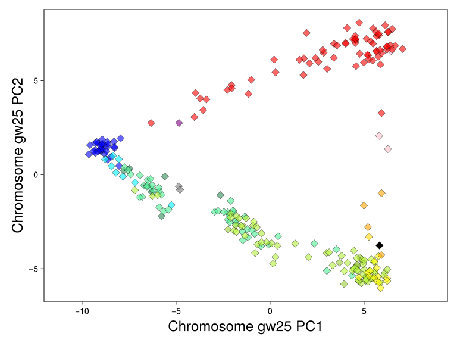
scaffold = "gw26"
PCAmodel = plotOneScaffoldPCA(groups_to_plot_PCA, group_colors_PCA,
baseName, tagName, scaffold;
flipPC1=true, flipPC2=true, showTitle=false)
if savefig #set to true to save
filename = string("Figure_", scaffold, "_PCA_allInds_from_Julia.png")
save(filename, PCAmodel.PCAfig, px_per_unit = 2.0)
println("Saved ", filename)
endLoaded GW_genomics_2022_with_new_genome/GW2022_GBS_012NA_files/GW2022_all4plates.genotypes.SNPs_only.whole_genome.Jan2025.chrgw26.KNNimputedMissing.jld2
chrgw26: 14303 SNPs from 257 individuals┌ Warning: Found `resolution` in the theme when creating a `Scene`. The `resolution` keyword for `Scene`s and `Figure`s has been deprecated. Use `Figure(; size = ...` or `Scene(; size = ...)` instead, which better reflects that this is a unitless size and not a pixel resolution. The key could also come from `set_theme!` calls or related theming functions.
└ @ Makie ~/.julia/packages/Makie/Y3ABD/src/scenes.jl:238PC1 explains 14.828697% of the total variance.
PC2 explains 7.8627186%.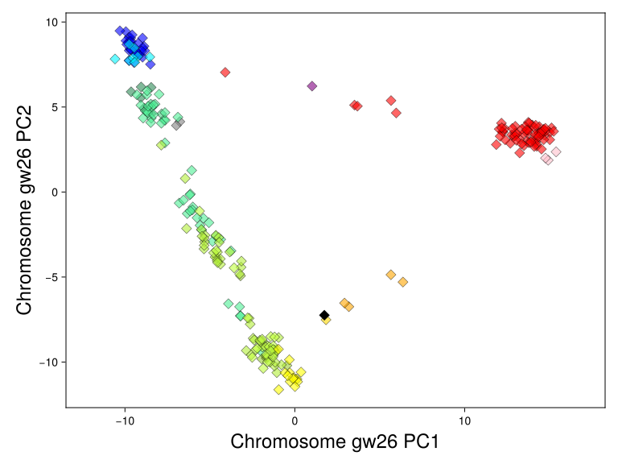
scaffold = "gw27"
PCAmodel = plotOneScaffoldPCA(groups_to_plot_PCA, group_colors_PCA,
baseName, tagName, scaffold;
flipPC1=true, flipPC2=true, showTitle=false)
if savefig #set to true to save
filename = string("Figure_", scaffold, "_PCA_allInds_from_Julia.png")
save(filename, PCAmodel.PCAfig, px_per_unit = 2.0)
println("Saved ", filename)
endLoaded GW_genomics_2022_with_new_genome/GW2022_GBS_012NA_files/GW2022_all4plates.genotypes.SNPs_only.whole_genome.Jan2025.chrgw27.KNNimputedMissing.jld2
chrgw27: 9684 SNPs from 257 individuals┌ Warning: Found `resolution` in the theme when creating a `Scene`. The `resolution` keyword for `Scene`s and `Figure`s has been deprecated. Use `Figure(; size = ...` or `Scene(; size = ...)` instead, which better reflects that this is a unitless size and not a pixel resolution. The key could also come from `set_theme!` calls or related theming functions.
└ @ Makie ~/.julia/packages/Makie/Y3ABD/src/scenes.jl:238PC1 explains 12.95481% of the total variance.
PC2 explains 7.359955%.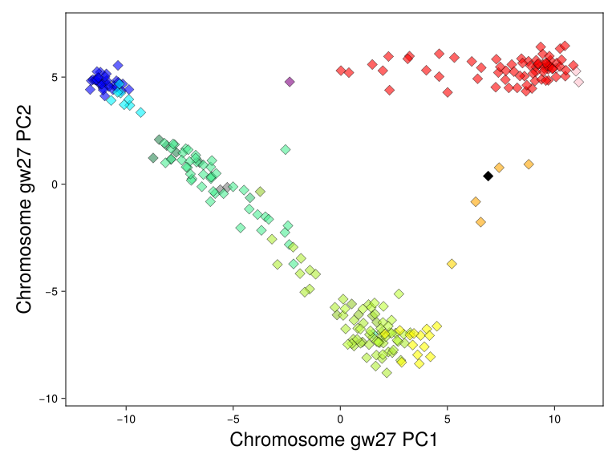
scaffold = "gw28"
PCAmodel = plotOneScaffoldPCA(groups_to_plot_PCA, group_colors_PCA,
baseName, tagName, scaffold;
flipPC1=true, flipPC2=true, showTitle=false)
if savefig #set to true to save
filename = string("Figure_", scaffold, "_PCA_allInds_from_Julia.png")
save(filename, PCAmodel.PCAfig, px_per_unit = 2.0)
println("Saved ", filename)
endLoaded GW_genomics_2022_with_new_genome/GW2022_GBS_012NA_files/GW2022_all4plates.genotypes.SNPs_only.whole_genome.Jan2025.chrgw28.KNNimputedMissing.jld2
chrgw28: 11180 SNPs from 257 individuals
PC1 explains 13.7301655% of the total variance.
PC2 explains 8.083617%.┌ Warning: Found `resolution` in the theme when creating a `Scene`. The `resolution` keyword for `Scene`s and `Figure`s has been deprecated. Use `Figure(; size = ...` or `Scene(; size = ...)` instead, which better reflects that this is a unitless size and not a pixel resolution. The key could also come from `set_theme!` calls or related theming functions.
└ @ Makie ~/.julia/packages/Makie/Y3ABD/src/scenes.jl:238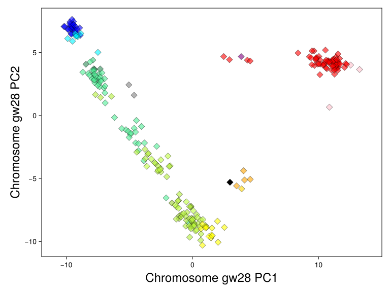
Make Z chromosome PCA:
regionText = "chrgwZ_cleaned"
filename = string(baseName, tagName, regionText, ".KNNimputedMissing.jld2")
imputed_genos = load(filename, "imputed_genos")
ind_with_metadata_indFiltered = load(filename, "ind_with_metadata_indFiltered")
pos_SNP_filtered_region = load(filename, "pos_SNP_filtered_region")
println(string("Loaded ",filename))
println(string(regionText, ": ", size(imputed_genos,2), " SNPs from ", size(imputed_genos,1), " individuals"))
flipPC1 = true
flipPC2 = true
PCAmodel = plotPCA(imputed_genos, ind_with_metadata_indFiltered,
groups_to_plot_PCA, group_colors_PCA;
sampleSet = "greenish warblers", regionText=regionText,
flip1 = flipPC1, flip2 = flipPC2,
lineOpacity = 0.7, fillOpacity = 0.6,
symbolSize = 14, showTitle = false,
xLabelText = string("Chromosome Z PC1"), yLabelText = string("Chromosome Z PC2"),
showPlot = false)
totalObservationVariance = var(PCAmodel.model)
PC1_variance, PC2_variance = principalvars(PCAmodel.model)[1:2]
PC1_prop_variance = PC1_variance / totalObservationVariance
PC2_prop_variance = PC2_variance / totalObservationVariance
println("PC1 explains ", 100*PC1_prop_variance, "% of the total variance.
PC2 explains ", 100*PC2_prop_variance, "%.")
# add position of reference genome
refGenomePCAposition = predict(PCAmodel.model, zeros(size(imputed_genos, 2)))
flipPC1 && (refGenomePCAposition[1] *= -1) # this flips PC1 if flipPC1 = true
flipPC2 && (refGenomePCAposition[2] *= -1) # same for PC2
CairoMakie.scatter!(refGenomePCAposition[1], refGenomePCAposition[2], marker = :diamond, color="black", markersize=14, strokewidth=0.5)
try
display(PCAmodel.PCAfig)
catch
println("NOTICE: Figure for ", regionText, " could not be shown due to an unknown error.")
end
if savefig #set to true to save
filename = string("Figure_gwZ_PCA_allInds_from_Julia.png")
save(filename, PCAmodel.PCAfig, px_per_unit = 2.0)
println("Saved ", filename)
endLoaded GW_genomics_2022_with_new_genome/GW2022_GBS_012NA_files/GW2022_all4plates.genotypes.SNPs_only.whole_genome.Jan2025.chrgwZ_cleaned.KNNimputedMissing.jld2
chrgwZ_cleaned: 51505 SNPs from 257 individuals┌ Warning: Found `resolution` in the theme when creating a `Scene`. The `resolution` keyword for `Scene`s and `Figure`s has been deprecated. Use `Figure(; size = ...` or `Scene(; size = ...)` instead, which better reflects that this is a unitless size and not a pixel resolution. The key could also come from `set_theme!` calls or related theming functions.
└ @ Makie ~/.julia/packages/Makie/Y3ABD/src/scenes.jl:238PC1 explains 17.929323% of the total variance.
PC2 explains 9.7906275%.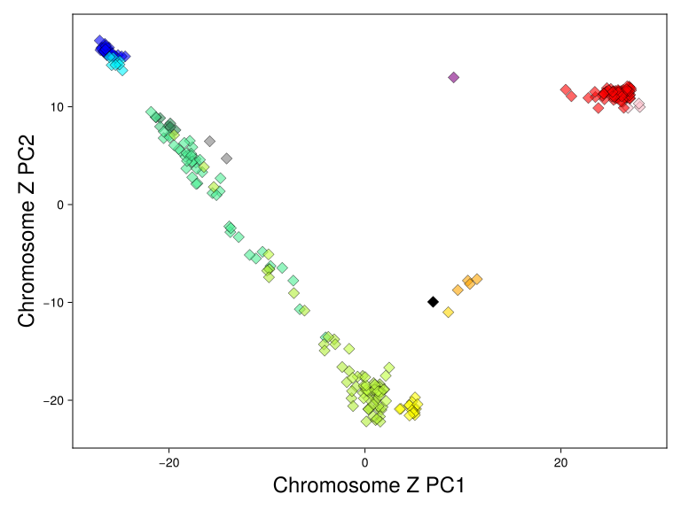
The below script will produce a bunch of PCAs for different scaffolds, but will not appropriately flip the axes of each as the above ones do (so making inactive):
scaffolds_to_show_PCA = "gw" .* string.(vcat(1:15, 17:28))
push!(scaffolds_to_show_PCA, "gw1A", "gw4A", "gwZ_cleaned") # add three other scaffolds
for i in eachindex(scaffolds_to_show_PCA)
chrom = scaffolds_to_show_PCA[i]
PCAmodel = plotOneScaffoldPCA(groups_to_plot_PCA,
group_colors_PCA,
baseName, tagName, chrom;
flipPC1=true, flipPC2=true, showTitle=true)
end